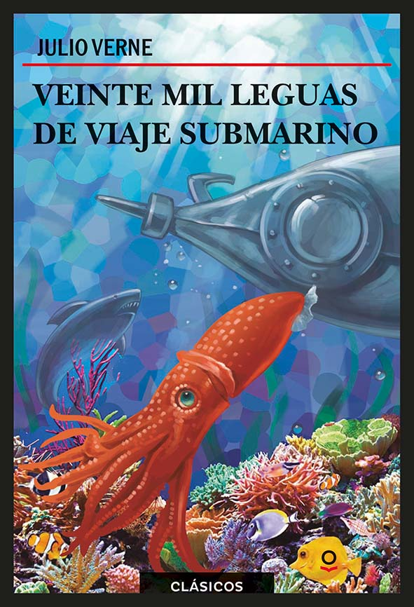

El señor de los anillos: la comunidad del anillo
En la Tierra Media, el Señor Oscuro Sauron forjó los Grandes Anillos del Poder y creó uno con el poder de esclavizar a toda la Tierra Media.
Más info
Harry potter y la piedra filosofal
Harry Potter se ha quedado huérfano y vive en casa de sus abominables tíos y del insoportable primo Dudley. Se siente muy triste y solo, hasta que un buen día recibe una carta que cambiará su vida para siempre.
Más info

Veinte mil leguas de viaje submarino
Un viaje alucinante por el fondo marino a bordo del Nautilus, capitaneado por el enigmático Nemo.
Más info